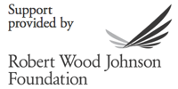
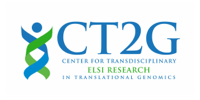

name: intro class: center, middle # Sharing v. Privacy ## A workshop funded by RWJF Washington DC • February 2015 Puneet Kishor (Plazi) Released under a [CC0 Public Domain Dedication](https://creativecommons.org/publicdomain/zero/1.0/). <div class="slidefooter"> <a href="/Sharing-v-Privacy"><img src="/_lib/img/PunkishEidesisOrg-small.gif"></a> <a rel="license" href="https://creativecommons.org/publicdomain/zero/1.0/"><img src="/_lib/img/zero.png" alt="CC0" width="30" height="30"></a> <div class="navlinks"> <a href="javascript:slideshow.gotoPreviousSlide()">prev</a> <a href="javascript:slideshow.gotoNextSlide()">next</a> </div> </div> --- layout: true <div class="slidefooter"> <a href="/Sharing-v-Privacy"><img src="/_lib/img/PunkishEidesisOrg-small.gif"></a> <a rel="license" href="https://creativecommons.org/publicdomain/zero/1.0/"><img src="/_lib/img/zero.png" alt="CC0" width="30" height="30"></a> <div class="navlinks"> <a href="javascript:slideshow.gotoPreviousSlide()">prev</a> <a href="javascript:slideshow.gotoNextSlide()">next</a> </div> </div> --- ## Help * Notes are hidden, but may be seen by pressing **P** on your keyboard. * Press **C** to clone a show. * Press **H** for other keyboard shortcuts. ??? notes here --- ## Sharing v. Privacy ### two edges of the same sword --- ## Sharing v. Privacy ### two edges of the same sword by Puneet Kishor Released under a [CC0 Public Domain Dedication](http://creativecommons.org/publicdomain/zero/1.0/). <hr> **Help:** Notes are hidden, but may be seen or hidden by pressing 'p'. Swipe on touch devices or use ← and → keys on your keyboard to change slides. --- ## The Sword # Data --- ## The Two Edges .two-left-column[ ## Sharing Clinicians and researchers needing access to data are unable to do so easily, or not at all, given the onerous privacy requirements they have to meet. ] .two-right-column[ ## Privacy Protecting privacy is important as it is a crucial component of trust, and without trust we would have no sharing. ] --- ## The Two Edges <img src="img/Summary-Findings/img/logo_nuffield.png" align="left" style="padding: 10px 20px 0px 0px;"> **Sharing** and **privacy** are “are mutually implicated in each other: there are private interests in the achievement of common goals and a public interest in the protection of privacy that encourages cooperation.” —The Nuffield Council on Bioethics --- ## The Privacy Imperative v. Emphasizing Sharing <img src="img/Summary-Findings/img/sharingvprivacyclips.jpg" width="100%"> > Instead of emphasizing the intricacies of privacy to the citizen from whom the data are being sourced, if alongwith providing a reasonable assurance to protect privacy we were to also communicate the potential benefits of sharing, then the citizen would be more inclined to give consent to sharing. --- ## Sharing v. Privacy: A Workshop ### Dates 6:30 PM–9 PM, Feb 17, 2015 8 AM–3 PM, Feb 18, 2015 ### Location University of California Washington Center (UCDC) 1608 Rhode Island Ave, NW Washington DC --- ## Workshop Organizer <table> <tr> <td></td> <td> <a href="http://creativecommons.org/" target="_blank">Creative Commons</a><br> <p class="small">A global nonprofit organization that enables the sharing and use of creativity and knowledge through free legal tools.</p> </td> </tr> </table> --- ## Workshop Sponsor <table> <tr> <td></td> <td> <a href="http://rwjf.org/" target="_blank">Robert Wood Johnson Foundation</a><br> <p class="small">Strives to bring about meaningful, lasting change—with the goal of building a Culture of Health that enables all in our diverse society to lead healthier lives.</p> </td> </tr> </table> --- ## Workshop Partners <table> <tr> <td></td> <td> <a href="http://humangenetics.ucsf.edu/" target="_blank">Institute for Human Genetics, UCSF</a><br> <p class="small">A focal point on the UCSF campus for faculty who share an interest in human genetics.</p> </td> </tr> <tr> <td></td> <td> <a href="http://www.ct2g.org/" target="_blank">CT2G, UCSF</a><br> <p class="small">A resource for ethical, legal, social and policy analysis of emerging issues in translational genomics at UCSF.</p> </td> </tr> <tr> <td></td> <td> <a href="http://www.personalgenomes.org/" target="_blank">Personal Genomes Project</a><br> <p class="small">Creating public genome, health, and trait data of participants willing to share their personal data.</p> </td> </tr> <tr> <td></td> <td> <a href="http://www.ethik.uzh.ch/ibme_en.html" target="_blank">Institute for Biomedical Ethics and History of Medicine</a><br> <p class="small">Belongs to the Medical Faculty of the University of Zürich and forms part of the Centre for Ethics.</p> </td> </tr> </table> --- ## Workshop Attendees **Researchers:** What needs to be done? **Ethicists, Patient Groups, Policy Makers:** Is it the right thing to do? **Technologists:** How to do it? **Lawyers:** How to do it **legally**? --- ## Institutions Represented Berkman Center for Internet and Society, Harvard University • Center for Open Science • Computational Genomics Research Group, University of California Berkeley • <b class="hilite">Creative Commons</b> • **CT2G, UCSF** • Duke University Science & Society • Forensic Science and Biomedical Innovation, OSTP • Geisinger • Genetic Alliance • Global Alliance for Genetics and Health • Harvard Partners • Icahn Institute Sharing Lab • Interuniversity Consortium for Political and Social Research (ICPSR) • **Institute of Biomedical Ethics, Univ. of Zürich** • **Institute of Human Genetics, UCSF** • National Human Genome Research Institute • Office of Human Research Protections • Patient CrossRoads • **Personal Genome Project** • Population Studies Center, University of Michigan • <b class="hilite">Robert Wood Johnson Foundation</b> • Sage Bionetworks • UCSF School of Medicine • Univ. of Louisville Medical School • Univ. of Utah School of Law • Univ. of Houston School of Law <hr> [full list of attendees](http://science.creativecommons.org/sharingvprivacy/workshop.html) --- ## Four Sessions <details open> <summary>Ethics</summary> <p>Can privacy requirements be trumped, and if yes, under what conditions? Can we waive our right to genomic privacy, and if not, when is this right not waiveable? Should we strive only for adequate privacy?</p> </details> <details open> <summary>Encouraging Data Sharing</summary> <p>This session reflected on why we want access to data, what data should be made accessible? What limits should be placed on who can use the data and for what? What are the risks associated with breach?</p> </details> <details open> <summary>Engagement Tools</summary> <p>Organizing an effective research study is complex. The “legal stack” alone can have many interconnected components such as informed consent, privacy policy, terms of use, DUAs, IRBs. Tools can help.</p> </details> <details open> <summary>Protocols</summary> <p>The final session focused on communications with citizens, the source of the data, and how to involve them in decision-making via mechanisms of inclusive governance and deliberative democracy.</p> </details> --- .left-column[ ## Ethics ] .right-column[ Privacy as **contextual integrity** tying adequate protection for privacy to norms of specific contexts . ] --- .left-column[ ## Ethics ] .right-column[ Privacy as **contextual integrity** tying adequate protection for privacy to norms of specific contexts Adequate privacy should be dependent on the context instead of hewing to an absolute standard ] --- .left-column[ ## Ethics ] .right-column[ Privacy as **contextual integrity** tying adequate protection for privacy to norms of specific contexts Adequate privacy should be dependent on the context instead of hewing to an absolute standard We need a mechanism that aims for maximizing social benefit not consent forms that are an exercise in litigation minimization ] --- .left-column[ ## Ethics ## Data Sharing ] .right-column[ **Minimum Viable Dataset:** The least amount of data that, if shared, would benefit research . ] ??? something on MVD --- .left-column[ ## Ethics ## Data Sharing ] .right-column[ **Minimum Viable Dataset:** The least amount of data that, if shared, would benefit research **Social Contract:** creates a trusted environment for research through a patient's obligation to share data *and* a researcher's obligation to use data properly ] ??? **Patient's obligation to share data:** *I might benefit from the knowledge gained from the data of others therefore I should share my data so others may benefit.* **Researcher's obligation to use data:** in accordance with the wishes of the patient—*I have been entrusted with someone else's data so I should not violate that trust and use the data with respect for and in accordance with the wishes of the source of the data* A revised social contract for health research that focuses on the creation of trusted environments for research. Such a contract would spell out reasonable privacy expectations in different research contexts, enable sustained engagement between the research and its participants, and promote a sharing culture through fulfilling mutual responsibilities of both the participants and the researchers. --- .left-column[ ## Ethics ## Data Sharing ] .right-column[ **Minimum Viable Dataset:** The least amount of data that, if shared, would benefit research **Social Contract:** creates a trusted environment for research through a patient's obligation to share data *and* a researcher's obligation to use data properly **Question:** Will this <span class="hilite">social contract</span> also be a <span class="hilite">legal contract</span>? If **yes**, it would gather all the cruft of law. If **no**, from where would it get its teeth in case of violations? ] --- .left-column[ ## Ethics ## Data Sharing ] .right-column[ **Minimum Viable Dataset:** The least amount of data that, if shared, would benefit research **Social Contract:** creates a trusted environment for research through a patient's obligation to share data *and* a researcher's obligation to use data properly **Question:** Will this <span class="hilite">social contract</span> also be a <span class="hilite">legal contract</span>? If **yes**, it would gather all the cruft of law. If **no**, from where would it get its teeth in case of violations? **De-identification** is an illusion, and de-identified datasets are less useful ] ??? Researchers should sign up to a social contract to not re-identify. --- .left-column[ ## Ethics ## Data Sharing ] .right-column[ **Minimum Viable Dataset:** The least amount of data that, if shared, would benefit research **Social Contract:** creates a trusted environment for research through a patient's obligation to share data *and* a researcher's obligation to use data properly **Question:** Will this <span class="hilite">social contract</span> also be a <span class="hilite">legal contract</span>? If **yes**, it would gather all the cruft of law. If **no**, from where would it get its teeth in case of violations? **De-identification** is an illusion, and de-identified datasets are less useful A new Belmont Report is needed recognizing that the **distinction between clinic and research** is blurring ] ??? something on continuous learning --- .left-column[ ## Ethics ## Data Sharing ## Engagement Tools ] .right-column[ **Engagement Rather Than Consent:** *Engagement* implies partnership while *consent* implies hierarchy . ] --- .left-column[ ## Ethics ## Data Sharing ## Engagement Tools ] .right-column[ **Engagement Rather Than Consent:** *Engagement* implies partnership while *consent* implies hierarchy **Partnership:** We, the patients, researchers, and clinicians, are all in this together ] --- .left-column[ ## Ethics ## Data Sharing ## Engagement Tools ] .right-column[ **Engagement Rather Than Consent:** *Engagement* implies partnership while *consent* implies hierarchy **Partnership:** We, the patients, researchers, and clinicians, are all in this together **IRBs:** Researchers should have a choice of IRBs so there is more competition among IRBs. ] --- .left-column[ ## Ethics ## Data Sharing ## Engagement Tools ## Protocols ] .right-column[ **Data are not property:** Data are not copyrightable. Data sharing is a socio-technical initiative, not based on property rights. . ] --- .left-column[ ## Ethics ## Data Sharing ## Engagement Tools ## Protocols ] .right-column[ **Data are not property:** Data are not copyrightable. Data sharing is a socio-technical initiative, not based on property rights. **Governance:** Moving from *my data, my wishes* to *our data, our needs* ] --- .left-column[ ## Ethics ## Data Sharing ## Engagement Tools ## Protocols ] .right-column[ **Data are not property:** Data are not copyrightable. Data sharing is a socio-technical initiative, not based on property rights. **Governance:** Moving from *my data, my wishes* to *our data, our needs* Researcher, clinicians, tool makers, and most importantly, the participants, should have a seat at the governance table ] --- ## The False Promise of Anonymization > Anonymization is increasingly easily defeated by the very techniques that are being developed for many legitimate applications of big data. In general, as the size and diversity of available data grows, the likelihood of being able to re‐identify individuals (that is, re‐associate their records with their names) grows substantially. While anonymization may remain somewhat useful as an added safeguard in some situations, approaches that deem it, by itself, a sufficient safeguard need updating. —PCAST. 2014. Big Data and Privacy: A Technological Perspective. --- ## The False Promise of Consent > Only in a fantasy world do users actually read the consent notices and understand their implications. The conceptual problem with notice and consent is that it fundamentally places the burden of privacy protection on the individual. Notice and consent creates a non‐level playing field in the implicit privacy negotiation between provider and user. The provider offers a complex, take‐it‐or‐leave‐it set of terms, while the user, in practice, can allocate only a few seconds to evaluating the offer. This is a kind of market failure. —PCAST. 2014. Big Data and Privacy: A Technological Perspective. --- # What Next? --- layout: false # Let's Create ## Social Contracts Sharing and privacy mutually implicated in each other --- # Let's Create ## Social Contracts Sharing and privacy mutually implicated in each other ## Engagement Tools Engagement not consent --- # Let's Create ## Social Contracts Sharing and privacy mutually implicated in each other ## Engagement Tools Engagement not consent ## Governance Protocols Equal representation ---